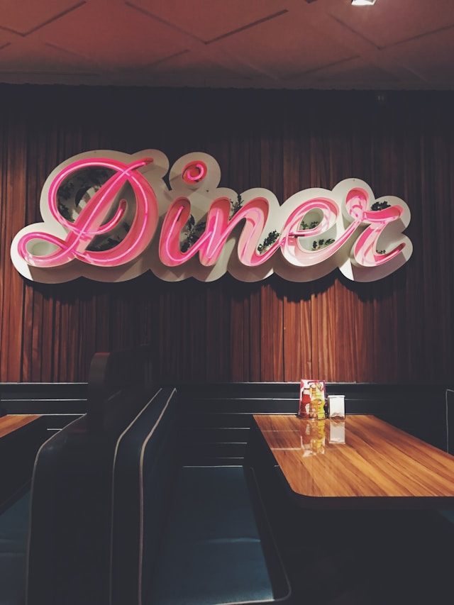
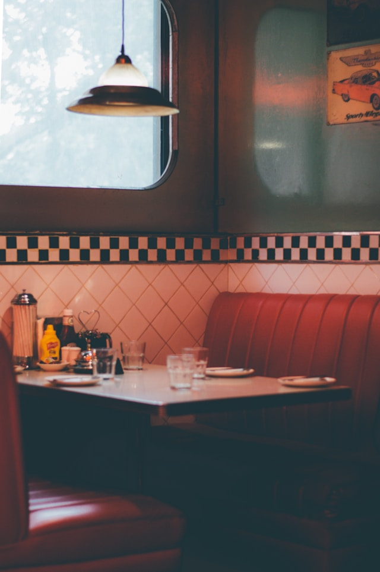

Located at #1 Victory Road
Hours of Operation
Monday- Friday: 9 am to 10 pm
Saturday and Sunday: 10 am to 12 am
Established in 2001 Gary Blue’s is dedicated to providing our customers with the freshest food possible at the best price.
Drop in sometime and try for yourself!